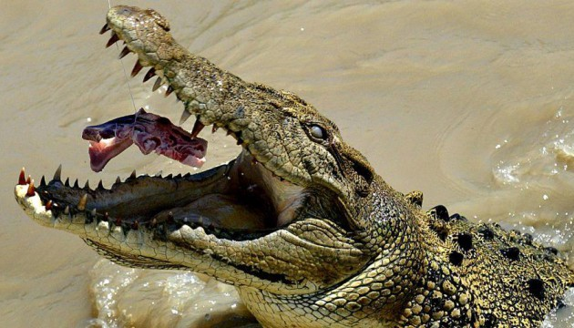

Le crocodile du Nil (Crocodylus niloticus) est l’un des plus grands reptiles vivants. C’est aussi un carnivore féroce. Très répandu sur le continent africain au début du siècle, le crocodile du Nil a été pourchassé sans merci. Aujourd’hui, le crocodile du Nil est protégé, car très menacé d’extinction. Le crocodile du Nil sillonne les fleuves, rivières, lacs et marais de l’Afrique au sud du Sahara. Bien qu’il soit surtout aquatique, il se déplace très agilement sur la terre ferme. Il peut courir à 17 km/h et sur plusieurs mètres. En période de sécheresse, il effectue de longs parcours pour trouver un plan d’eau. On le voit, le plus souvent, somnoler sur les berges, la gueule grande ouverte pour réguler sa température. Il possède des pattes courtes, mais solides qui se terminent par cinq doigts (membres antérieurs) et quatre doigts (membres postérieurs).
